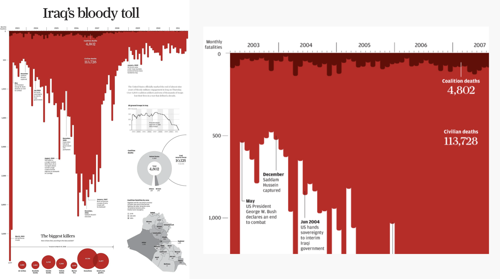
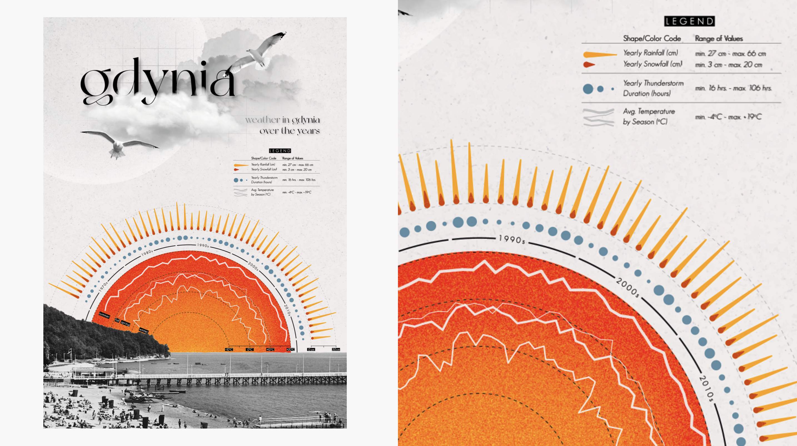
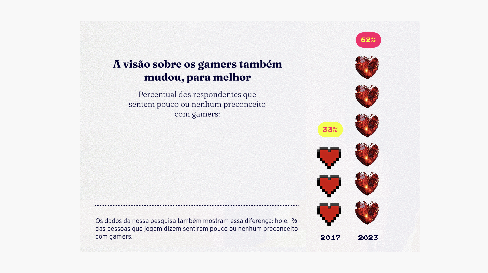

Contando Histórias com Dados — Aula 2 · 2h30
Visualizações de dados que falam por si
com Ana
03.SET.2026
ETHOS
ética, confiabilidade
persuasão
LOGOS
lógica, razão
Por que contar histórias com gráficos?
13
limitação técnica do monitor usado no experimento, não do cérebro humano
O nosso cérebro consegue identificar o conteúdo de uma imagem mesmo que ela tenha sido vista por apenas milissegundos.
Ver referência →
↗ slide interativo
Porcentagem de pessoas que incorretamente acredita que as temperaturas globais vem diminuindo ou se mantendo nos últimos 30 anos
Próximo passo do experimento →
↺ Reiniciar experimento
Mas eu não precisei provar isso para vocês acreditarem em mim.
Essas informações são reais, publicadas no The Washington Post , a partir de um artigo no Journal of Elections, Public Opinion and Parties.
"Mas é muita mão ter inventado isso tudo..."
história com gráficos
LOGOS
"Eu consigo chegar à mesma conclusão vendo os dados/resultados"
ETHOS
O maior valor de uma imagem é quando ela nos força a perceber algo que nós nunca esperávamos ver.
Naquele Império, a Arte da Cartografia logrou tal perfeição que o mapa de uma única Província ocupava toda uma Cidade, e o mapa do Império, toda uma Província. Com o tempo, esses Mapas Desmedidos não satisfizeram mais e os Colégios de Cartógrafos levantaram um Mapa do Império, que tinha o tamanho do Império e coincidia pontualmente com ele.
Jorge Luis Borges, "Do Rigor na Ciência"
uma história dentro de uma história
1. PARA QUEM?
Para quem estou contando essa história?
2. POR QUE?
Por que eu quero que ela saiba isso e por que ela está me dando atenção?
3. O QUÊ?
Quais as mensagens mais importantes da minha história?
4. COMO?
Qual narrativa e quais elementos vou usar para passar essas mensagens?
5. COM O QUÊ?
Qual meio ou produto vou usar para contar a história?
FOCO NA MENSAGEM
Processo começa com "Por que eu estou criando esse gráfico?"
Escolhas guiadas pela mensagem.
Qualidade medida pela eficiência em fazer a audiência entender a mensagem.
FOCO NA REPRESENTAÇÃO DOS DADOS
Processo começa com "Qual o melhor jeito de visualizar os dados?"
Escolhas guiadas pela natureza dos dados.
Qualidade medida pela habilidade de representar os dados (?)
Adaptado da palestra de Nick Desbarats no Outlier 2023
PESQUISA FICTÍCIA ANTES E DEPOIS DO TREINAMENTO
Como você se sente em relação a contar histórias com dados?
Otimista
Bem
Neutro
Mal
Péssimo
Antes
19%
25%
40%
5%
11%
Depois
38%
30%
14%
6%
12%
VENDER NO INSTAGRAM
A Ana é ótima!
depois do curso
68%
ficaram animadas para contar histórias com dados
Adaptado de um estudo de caso do livro Storytelling com Dados , de Cole Nussbaumer Knaflic (Alta Books)
POSITIVO MAS DETALHADO
Após o treinamento, a maioria das pessoas se sentiu animada a contar histórias com dados
ANTES , o maior grupo era das pessoas neutras em relação ao assunto.
DEPOIS , os maiores grupos são os de sentimentos bons a respeito.
Adaptado de um estudo de caso do livro Storytelling com Dados , de Cole Nussbaumer Knaflic (Alta Books)
DETALHADO CRÍTICO
Apesar de ter aumentado as reações positivas, o mesmo aconteceu com as negativas.
Péssimo
Mal
Neutro
Bem
Otimista
As reações NEGATIVAS aumentaram, ambas, ligeiramente
Os dois grupos positivos aumentaram, especialmente o OTIMISTA .
Adaptado de um estudo de caso do livro Storytelling com Dados , de Cole Nussbaumer Knaflic (Alta Books)
MUDANÇA
Poucas pessoas permaneceram neutras após o treinamento.
Antes
Depois
Péssimo · 11%
Mal · 5%
Neutro · 40%
Bem · 25%
Otimista · 19%
Péssimo · 12%
Mal · 6%
Neutro · 14%
Bem · 30%
Otimista · 38%
Adaptado de um estudo de caso do livro Storytelling com Dados , de Cole Nussbaumer Knaflic (Alta Books)
Se o meu gráfico fosse uma frase, o que ele diria?
temperatura global ao longo do tempo
1. Mostrar que o comportamento é muito diferente do registro histórico de longa data, mesmo dos casos extremos.
2. Mostrar que existe consenso entre órgãos do mundo todo sobre o aumento da temperatura nos últimos 30 anos.
3. Reforçar o contraste entre os desvios da temperatura para conscientizar sobre o comportamento recente.
precisão exposição intenção
QUAL PRECISÃO MINHA AUDIÊNCIA PRECISA TER DOS DADOS?
QUAL PRECISÃO MINHA AUDIÊNCIA PRECISA TER DOS DADOS?
mais preciso menos preciso
acessar exemplo
qual o tipo de exposição que a audiência precisa?
Exploratório
contemplativo
curioso
interativo
input
Insight
na cara
passo-a-passo
destaque
qual a intenção do meu gráfico?
Mudança no tempo
Comparação de magnitude
Composição
Ranking
Desvio
Correlação
Fluxo
Distribuição
↗ clique nas frases
temperatura global ao longo do tempo
1. Mostrar que o comportamento é muito diferente do registro histórico de longa data, mesmo dos casos extremos.
2. Mostrar que existe consenso entre órgãos do mundo todo sobre o aumento da temperatura nos últimos 30 anos.
3. Reforçar o contraste entre os desvios da temperatura para conscientizar sobre o comportamento recente.
Gráfico de pizza
Clique em uma categoria para ver um exemplo.
Se o meu gráfico fosse uma frase, o que ele diria?
EXERCÍCIO!
Vamos retomar a nossa história de ontem e pensar quais os conceitos que queremos expressar através de gráficos.
Há muito mais que dados em uma visualização de dados
O mínimo de design que todo mundo precisa saber, e boas práticas na hora de fazer gráficos.
Textos e anotações acrescentam enorme valor para pessoas que "não são de gráficos", agindo como guia ao mostrar qual mensagem o gráfico está comunicando, e preparando o terreno para a exploração.
JOHN BURN-MURDOCH, CHIEF DATA REPORTER NO FINANCIAL TIMES, NO OUTLIER 2023
um pouco de design
gestalt
substantivo, psicologia
Princípios da Gestalt são leis da psicologia da percepção que explicam como o cérebro humano organiza elementos visuais em um todo coerente, em vez de ver apenas partes isoladas.
Fonte: gestalt.com.br
princípios da gestalt
fechamento e continuidade
Clique em um princípio para ver um exemplo.
Dicas para usar hoje mesmo
títulos
Conduza o olhar com o tamanho de fonte.
Formule para ser legível.
Se o título é a primeira coisa vista, não desperdice! Aproveite para expor o insight...
...ou deixar a audiência curiosa.
Clique em uma dica para ver um exemplo.
Fonte: exemplos próprios e Datawrapper, "Text in data visualizations"
rótulos
Relembre o que as pessoas estão vendo.
Garanta legibilidade.
Atenção com a formatação dos números.
Não faça as pessoas terem torcicolo.
Clique em uma dica para ver um exemplo.
Fonte: exemplos próprios e Datawrapper, "Text in data visualizations"
eixos
Barras começam em zero!
Não faça as pessoas terem torcicolo (2).
Não exagere na quantidade de divisões.
Precisa mesmo de rótulos e eixos?
Respeite a lógica do que é categórico e do que é sequencial.
Clique em uma dica para ver um exemplo.
Fonte: exemplos próprios e Datawrapper, "Text in data visualizations"
anotações
Clique em uma dica para ver um exemplo.
Como acrescentar pathos nas visualizações?
forma
cor
objeto
metáfora
forma
cor
objeto
metáfora
psicologia das formas
QUADRADO
Ordem, base, conformidade, estável, estrutura...
TRIÂNGULO
Poder, energia, movimento, força, hierarquia...
CÍRCULO
Perfeição, união, ciclo, afeto, completude...
ORGÂNICAS
Natureza, artesanal, sensibilidade, conforto, tangível...
forma
cor
objeto
metáfora
O que faz uma boa paleta?
Bom contraste
Cores fáceis de diferenciar e comparar.
Significativa
Estão associadas a uma informação.
Óbvia
Ajuda a entender o contexto.
Ética
Considera e respeita o cenário no qual está inserida.
Bonita
Visualmente atraente e harmônica, associada ao tom de voz e sentimentos.
↗ slide interativo
forma
cor
objeto
metáfora
tipos de paleta
Sequencial
Uma cor principal (ou duas, vai), gradiente.
↗ ver exemplo
Divergente
Duas cores principais e uma neutra.
↗ ver exemplo
Categórica
Cores independentes, categorias não relacionadas.
↗ ver exemplo

forma
cor
objeto
metáfora

forma
cor
objeto
metáfora

forma
cor
objeto
metáfora
Acha que complicou? Não viu nada...
dicas práticas
INVISTA EM PALETAS PRONTAS
Use todo esse conhecimento para te ajudar a escolher , testar acessibilidade e aplicar.
USE CORES COM MODERAÇÃO
Resolva tudo que for possível com cinza , depois coloque cores onde for indispensável.
APOSTE NA CONSISTÊNCIA
Defina padrões de cores, fontes, elementos visuais e tipos de gráficos — reduz a carga cognitiva da audiência e facilita sua vida.
O primeiro passo para seu gráfico ter voz própria é definir o quê ele precisa falar. E isso não aparece apenas na escolha do gráfico, mas nos detalhes que você adiciona.
EXERCÍCIO!
Voltem para os seus gráficos e façam os ajustes finos.
Obrigada
Contando Histórias com Dados — Aula 2